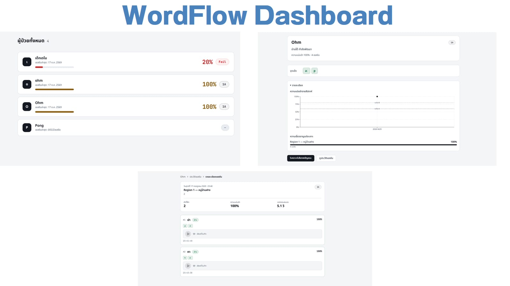

01 · BEGINNINGlook closer
Take it apart.
Days spent opening things up to see how the parts worked together.
 img/portrait-ign.jpg
img/portrait-ign.jpgp.01about me
#RS3
I take things apart to see how they work. Now I build things people rely on.
ORIGINp.02 · where curiosity started
01 · BEGINNINGlook closer
Days spent opening things up to see how the parts worked together.
02 · DISCOVERYask why
How do people build something this complex? I wanted to find out.
03 · FIRST TOOLStry it
Programming, then the SMT programme: real projects, real competitions.
Taking things apart taught me how parts work together. Programming and networks showed me how devices talk. WordFlow showed me that people depend on that data being right. Building systems where all three meet is what I want to keep learning.
GROWTHp.03 · learning from setbacks · TCTT
P8
P62. Out of my depth, with very little background.
P8 after one focused week of prep. +54 places.
Network, cryptography and web security challenges: packet captures (PCAP) and DNS data, encrypted messages, how websites send data and control access. When one of us is stuck, we swap problems for a fresh view. 2026: 8th nationally, 4th in the Central region (team qualifying round).
 img/tctt.jpg
img/tctt.jpgPURPOSEp.04 · WordFlow · team lead
Thai reading practice for children with learning disabilities. Every score has to reach their doctor, correct.
Funded · 28th National Software Contest
 img/wordflow-game.jpg
img/wordflow-game.jpg
img/wordflow-dashboard.jpgLed the team. Built the Next.js dashboard and the Unity user accounts, helped build the backend linking each child to their doctor, aligned field names, API routes and data structures across every part, and wrote end-to-end tests from starting a game to reading results back from Firestore. Clinical advice from RainyKids Clinic; testing with Chakri Naruebodindra Medical Institute (Ramathibodi) is being arranged.
TEAMp.05 · how I work with others
 img/zeitop.jpg
img/zeitop.jpgOld Android phone → PC control surface.
My jobUX/UI and the interactive web controller.
Gold3rd runner-up img/subtrack.jpg
img/subtrack.jpgFinds forgotten subscriptions in your inbox.
My jobSolution design, user flow, and the pitch.
1st10,000 THB img/docode.jpg
img/docode.jpgWebsites for real clients.
My jobCo-founder and frontend: page structure and UX/UI.
Livereal clientsPROOFp.06 · results and tools
FUTUREp.07 · where curiosity leads
Devices, the networks between them, and the people who rely on them. That's where I'm heading next.